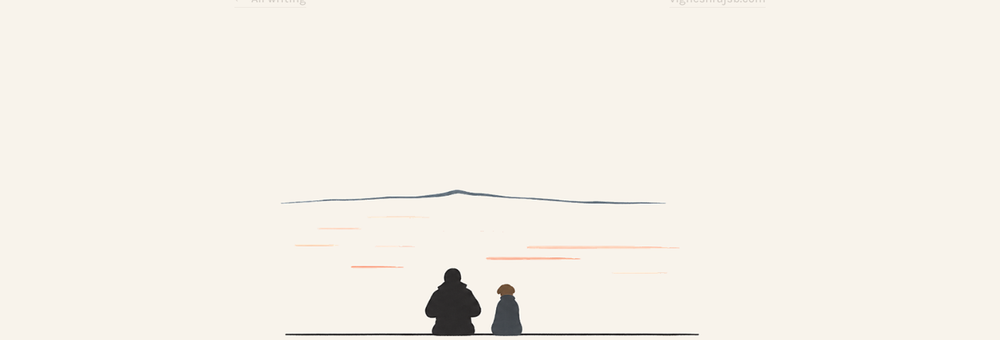
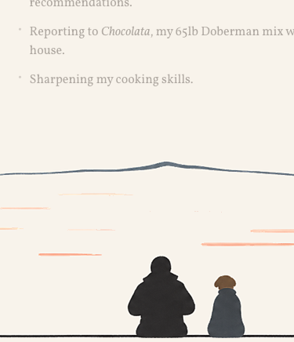

What: A site-wide footer that is a pure image: an abstracted, painted-feel rendition of the Lake Tahoe pier photo (Vignesh and Chocolata seated at the pier edge at sunset), with no text or links anywhere in it.
Why (product intent): The site currently ends abruptly after the last section. The footer gives every page one shared, personal ending: the author and his dog looking out over the water. It pairs with the Chocolata masthead so the site is bookended by the same two characters, and it sets the visual language for the upcoming scrapbook photo section (abstract, painted, personal photos rather than literal ones).
Success looks like: Every page (home, /writing/, all posts) dissolves seamlessly from cream paper into the scene; the pier deck is the last pixel of the page; the abstraction reads as flat painted shapes in the site's warm palette, not as a photo or a framed illustration.
In: skill-generated abstract panel art (codex cli + travel-photo-abstraction skill, driven from this session); footer markup + CSS on all 6 pages (index, writing index, 4 posts); three height presets (slim / medium / immersive) with a localhost-only preview control; swap-in of the chosen generated image.
Out: the scrapbook photo section (separate feature, will reuse this abstraction language); any footer text, colophon, or links; dark mode; SVG recreations of the art (owner rejected: the art must come from image generation, not hand-drawn vectors).
Direction (final): the travel-photo-abstraction skill's sparse editorial grammar, not a full painted scene. A mostly empty cream field carrying a handful of quiet marks derived from the photo: a single mountain ridge hairline with one peak, scattered peach and salmon reflection strokes, the two seated masses (Vignesh larger left, Chocolata smaller right with her warm brown head, the one warmest accent), and a long thin deck line they sit on. The art's background is baked to the exact sRGB value of --bg (rgb(248 243 235)), so the page dissolves into the scene with no seam, and the image is cropped so the deck line is its final rows: the line is literally the bottom of every page.
Chosen art: generation variation "panel 2" (horizontal-axis emphasis) from the source photo ~/Downloads/lake-footer.png. Height locked at 420px desktop / 300px under 540px viewports, object-fit: cover anchored center bottom. Spacing locked after a picker trial: zero gap above the art (footer margin cancels main's 6rem bottom padding) and zero gap below (the deck line's antialiased edge is the page's final pixel row).
Mobile: the wide art scaled to invisibility at 375x300 (cover fits the full 1.83:1 image into a 1.25:1 box, shrinking the motif to ~25px), so a dedicated 1000x800 crop of the same asset, centered on the figures with the deck line running edge to edge, is served under 540px via <picture>.
Asset pipeline (scripted, repeatable): crop at the detected deck line so the line's antialiased edge is the image's last row (nothing below it); Real-ESRGAN 4x (realesr-animevideov3 model) on the 1536px generation, with the model's bright edge-halo clamped by capping every pixel at the background cream; shift all pixels by the delta that maps the generator's #F3F0E8 background onto --bg; downsample to a 4608x2520 master (native pixels for ~2300px retina viewports); lossless WebP, 196 KB, plus a 1500x1200 mobile crop (169 KB) from the same master.
Review: owner reviewed live variations and the in-page trial directly; the Impeccable subagent workflow was explicitly skipped for this feature (owner call).
Concept mock (2026-08-14) — hand-drawn flat SVG stand-in, shown in page context with structure wireframe. Tested: composition, band order, seamless cream-sky dissolve, silhouette placement, deck-as-last-pixel. Learned: figures must overlap the deck edge by a clear margin or they read as floating on the water; the sun-glow band must butt directly against the cloud bands or a cream seam appears. Kept in session scratchpad; the stand-in SVG ships as assets/pier-footer.svg in step 3.
| Date | Decision | Rationale | Trade-off |
|---|---|---|---|
| 2026-08-14 | Footer contains no text or links, image only | Owner call during concept review; colophon content stays off the site | No footer nav or credits anywhere |
| 2026-08-14 | One generated image, figures baked in | Owner call: simplest pipeline for codex cli iterations | Silhouettes soften slightly at extreme widths; no independent figure animation later |
| 2026-08-14 | Identical footer on every page | Owner call: strongest as a signature ending | Long posts get the same full-height scene |
| 2026-08-14 | Height flexible: three presets + localhost-only preview control | Owner wants to try slim / medium / immersive against real pages before locking | Small dev-only script shipped until the height is locked |
| 2026-08-14 | Sky top edge is flat page cream, not a CSS fade mask | Seamless dissolve without gradients (banned by DESIGN.md); the image itself carries the blend | Image is coupled to the page background value |
| 2026-08-14 | This is the second sanctioned illustration exception in DESIGN.md (after Chocolata) | The "no photos, no illustration" rule predates this feature; footer + masthead bookend the site with the same two characters | DESIGN.md updated alongside this feature |
| 2026-08-14 | Art must come from image generation via the travel-photo-abstraction skill, never hand-drawn SVG recreation | Owner call: SVG mockups misrepresent the skill's aesthetic; the skill's sparse panels on near-cream ground fit the site better than the full-scene concept | Original full-scene direction and the SVG stand-in discarded |
| 2026-08-14 | Panel 2 at medium height (420px / 300px mobile), locked | Owner trialed shortlisted panels 2 and 3 in-page; panel 3 did not fit | Trial picker, height presets, and panel 3 removed |
| 2026-08-14 | Crop the art at the deck line and upscale 2x to 3072px, lossless WebP | Owner: the deck line must be the last pixels of the page, no empty space after; 1536px source looked pixelated on retina; lossy WebP shifted the background cream by 1 RGB unit, visible as a faint seam | 81 KB asset instead of 7 KB lossy |
| 2026-08-14 | Spacing locked at zero above and below the art; picker removed | Owner trialed presets and chose 0/0: content flows straight into the scene and the line ends the page | The scene's own empty sky is the only breathing room |
| 2026-08-14 | Separate 1000x800 mobile crop served via picture element | Cover-fitting the wide master into the tall mobile box shrank the motif to invisibility; a crop centered on the figures keeps them ~2x larger with the line edge to edge | Second asset (70 KB) to keep in sync if the art ever changes |
| 2026-08-14 | Real-ESRGAN 4x master (4608px) replaces the Lanczos 2x asset | Owner saw pixelation at a 2299px retina viewport: Lanczos adds no detail and the browser stretched 3072px a further 1.5x; codex's image tool is capped at 1536px so regeneration at high res was not possible, and pixel-faithful SVG would trade the soft watercolor edges for hard vector ones | Assets grow to 196 + 169 KB; a downloaded upscaler binary joins the pipeline |
| Task | Status | Notes |
|---|---|---|
| Concept wireframe + rough look | Done | Aligned with owner 2026-08-14 |
| Feature tracker scaffolded | Done | This file |
| Skill installed + 3 variations generated via codex exec | Done | Panels validated by the skill's uniform-background contract |
| Footer markup on all 6 pages | Done | index, writing/index, 4 posts |
| In-page trial of shortlisted panels 2 and 3 with picker | Done | Owner locked panel 2, medium; picker and variants then removed |
| Final asset: crop, color match, 2x upscale, lossless WebP | Done | assets/pier-footer.webp, 3072x1692, 81 KB |
| Validation on desktop, post page, mobile | Done | Screenshots below |
| Update DESIGN.md (second illustration exception) | Done | Shipped with the feature |
| What changed | From → To | Reason |
|---|---|---|
| Footer content | Colophon text on the deck → image only | Owner decision during concept review |
| Art direction | Full painted landscape scene (concept mock) → the skill's sparse editorial panel | Owner rejected SVG recreation; the installed skill's real output grammar is sparse marks on a near-cream field, which suits the paperlike site better |
| Build process | Design subagent + Impeccable review workflow → direct build, owner-reviewed | Owner call to skip Impeccable for this feature and avoid subagent token spend |
| Height flexibility | Three shipped presets with picker → single locked 420px (300px mobile) | Trial concluded same day; presets were a trial mechanism, not a feature |
rgb(248 243 235))scrollHeight (gap under 1px), verified in the live preview

Skill: travel-photo-abstraction installed at ~/.codex/skills/travel-photo-abstraction (verified with its check_installation.py). Run: codex exec with the source photo attached (-i swallows a following positional prompt, so pipe the prompt via stdin) and a deliverable override asking for three standalone no-text panels instead of the skill's photo-plus-panel composite. The skill validated each panel's uniform #F3F0E8 background before returning. Regenerating more variations later: same command, same override, new variation intents.
The remaining source panels (1 and 3) and the finalization script (finalize-panel2.py: deck-line detection, background delta shift, 2x Lanczos upscale, lossless WebP export) lived in the session scratchpad; the pipeline is fully described in Design, so any future re-run can rebuild the asset from a new generation in minutes.
The dissolve depends on the asset's background being byte-identical to --bg (rgb(248 243 235)). Re-encoding the WebP lossily shifts the cream by 1 RGB unit and reintroduces a faint seam; keep it lossless, and re-run the delta shift if --bg ever changes. The scrapbook photo section planned for the home page should reuse this same abstraction grammar and pipeline.